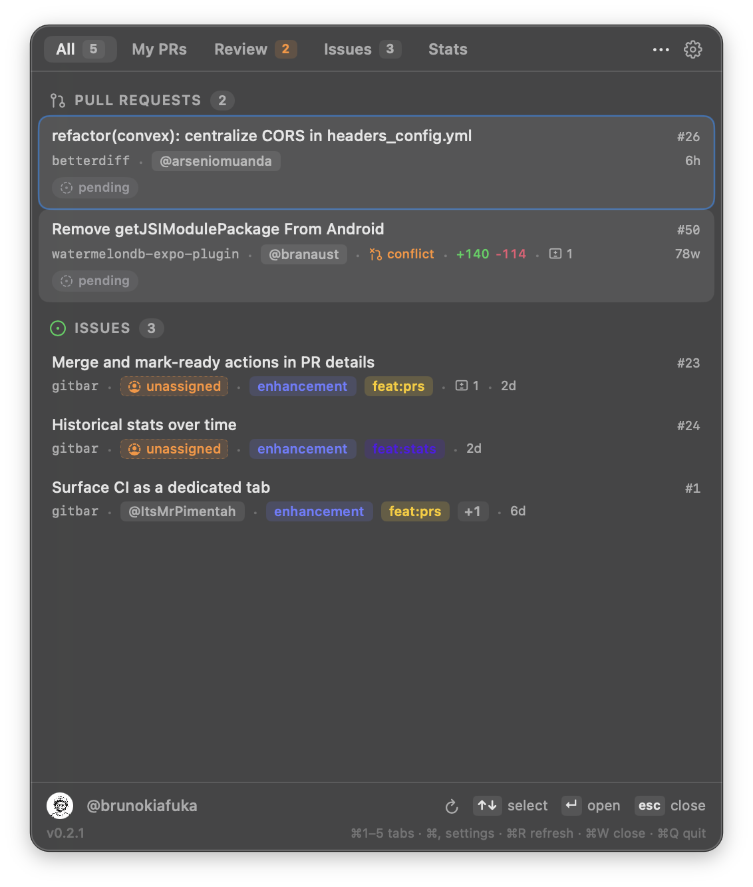
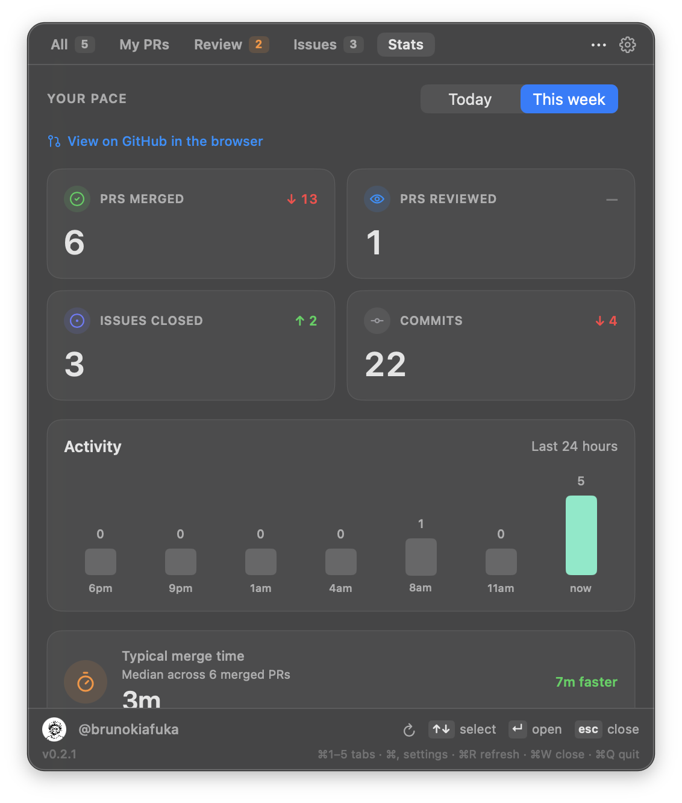
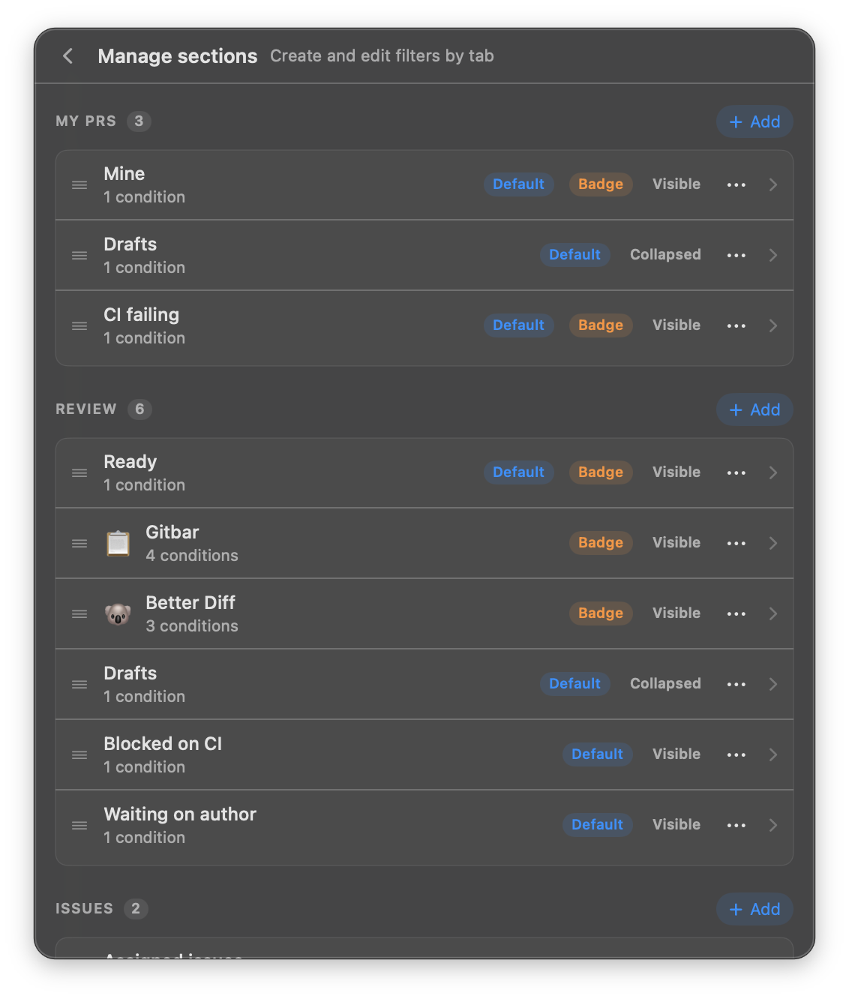

A personal queue for what you need to act on across repos. Your PRs, the reviews you owe, the issues assigned to you. One click from the menu bar.
brew tap brunokiafuka/gitbar
https://github.com/brunokiafuka/gitbar && brew install --cask
gitbar
Only the rows where you're the owner, reviewer, or assignee. Nothing else.
Every PR you authored, across every repo your token sees. CI, review state, diff size, one line each.
PRs assigned to you for review. Sorted oldest first so nothing rots.
Issues with your handle on them. Labels, repo, last updated. Click jumps to GitHub.
PRs merged, reviewed, issues closed, commits. Plus a 24-hour activity chart and your typical merge time.
Build your own filters: Drafts, Blocked on CI, Waiting on author. Set badges, collapse, reorder.
SwiftUI. Keyboard-first: ⌘1–5 tabs, ↵ open, ⌘R refresh. No Electron in your dock.
v0.2.5 on macOS 14. Click any row to jump to GitHub.



Install. Paste a token. Your queue lives in the menu bar.
brew install --cask brunokiafuka/gitbar/gitbar